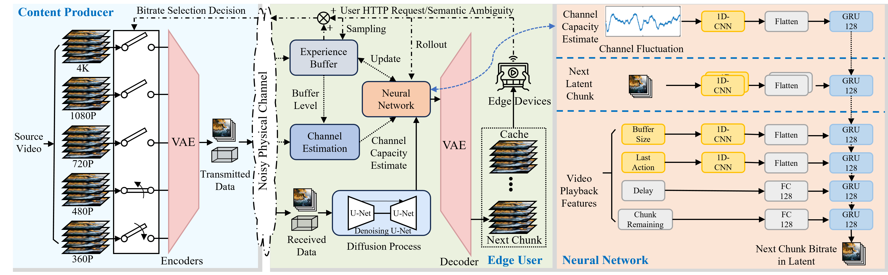
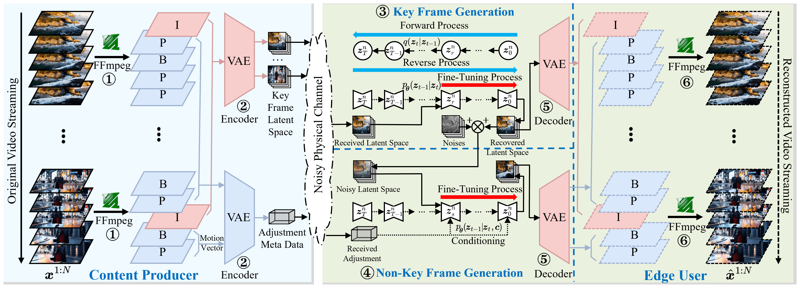

Multi-UAVs Path Planning and Aerial CommunicationDevelops a Branching Dueling deep reinforcement learning solution to simultaneously optimize the multi-UAV cell-association decisions and their moving speed decisions on a given 3D aerial highway. The following are a few problems that we are interested to address:
  Related publications
|